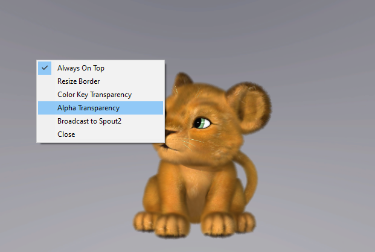
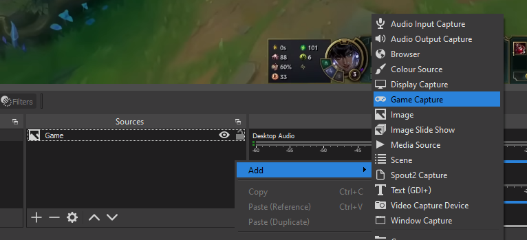
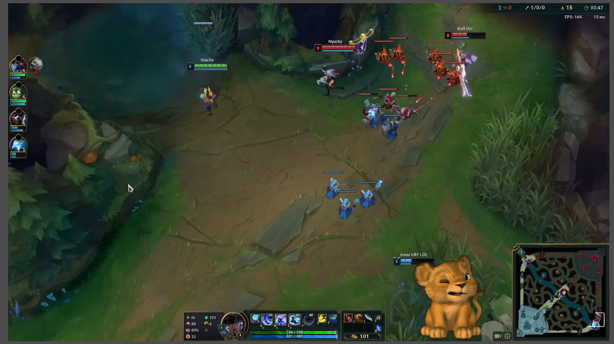

Alpha Transparency w/ OBS Game Capture
We’ll use the Dedicated Capture Window from Animaze with the Alpha Transparency option active, while OBS will capture the window with the use of the Game Capture source.
Steps
(in Animaze) Open the Dedicated Capture Window (hotkey Ctrl+S)
(in Animaze) Right-click on the Dedicated Capture Window and select the Alpha Transparency option.

(in OBS) In the Sources section, right-click > Add and click the Game Capture. You will be prompted with a Properties dialog.

(in OBS) Make sure you set the following options for the Game Capture source Properties page:
-
Mode: Capture specific window
-
Window: [AnimazeDesktop.exe]: AnimazeRenderWindow
-
Allow Transparency option toggled ON
(in OBS) You are done with the transparency, it’s now time to move the avatar where you need it in your stream.
Done and dusted!
